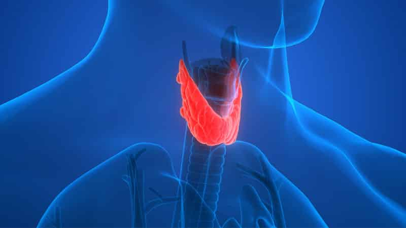

IMPORTANT THYROID FACTS EVERYONE SHOULD KNOW

Not Taking Care Of Your Thyroid? Weight Gain Is Only The Tip Of The Iceberg
Do you suffer from:
- Stubborn weight gain that won’t budge,
- Hair loss,
- Constant fatigue,
- Brain fog?
If so, you may be suffering from an underactive thyroid (hypothyroidism).
Located at the lower part of the neck below the area of Adam’s apple, the thyroid produces two hormones: triiodothyronine and thyroxine.
Along with cortisol and insulin – these four hormones control fat storage.
If we don’t take care of our thyroid gland, it can underperform. This is called hypothyroidism and it causes a host of health problems.
Females over 50 are most likely to suffer from this terrible ailment, but specialists are reporting that the problem is occurring more regularly with young people due to modern-day lifestyles and shifts in diet trends.
Those at a higher risk
If you suffer from these ailments, you’re at a much higher risk of hypothyroidism;
- Diabetes
- Multiple sclerosis
- Premature grey hair
- Goiter
- Left-handed people
- Any type of autoimmune diseases (psoriasis, celiac disease, Crohn’s disease…)
Symptoms of an unhealthy thyroid gland
An obvious way to tell if you’re thyroid is underperforming is identifying with some of the symptoms such as:- Weight gain that refuses to budge no matter how much you diet and exercise
- Swelling of the neck (below the area of the Adam’s apple)
- Lack of energy, irritability
- Brain fog, difficulty to concentrate
- Depression (if you’re overweight & have been diagnosed with depression; be sure to have your thyroid tested)
- Hair loss (with thyroid treatment, hair will grow back)
- Sensitivity to cold
- Brittle nails & dry skin
- Constipation
- Abnormal menstrual periods
Stress wreaks havoc on your thyroid
As mentioned earlier in the article, cortisol is a hormone that can affect your weight.
When we encounter stress, our body releases adrenaline and cortisol. This interferes with the thyroid glands ability to function.
If you have a stressful lifestyle, your thyroid may be temporarily shutting down several times a day. This can lead to adrenal fatigue which is often paired with thyroid disease.
Stress also wreaks havoc on the heart. Check out this article.
If you live a stressful life – meditation can give you an inner peace that will make you bulletproof to stressful situations.
Flouride's Impact On Thyroid Health
A case-control study, from Iran, examined the link between thyroid hormones and fluoride levels in drinking water.
The results showed that study groups with higher fluoride concentrations in the water had an increased risk for underactive thyroid gland activity.
If the city that you live in adds fluoride to your drinking water, you may want to consider adding a fluoride filter to your faucet.
Make sure you also add a fluoride filter for your shower head… as fluoride on the scalp can cause hair loss (this is important as an underactive thyroid also causes hair loss).
The importance of Iodine
Iodine is critical to our diet. The thyroid needs iodine to produce hormones.
Thyroid specialists estimate that 95% of patients with hypothyroidism are due to iodine deficiency.
There are two ways we deprive ourselves of iodine;
Not eating enough iodine rich foods – Foods that are rich in iodine are eggs (the yolk), dairy, fish and shellfish. And if you’re vegetarian; seaweed, lima beans and prunes.
Iodized table salt is also an easy way to get your dietary iodine needs (remember: moderation is the key, not excess).
Eating foods that stop the body from absorbing iodine – Eating too many cruciferous vegetables such as broccoli, Brussels sprouts, turnips, bok choy, cabbage, kale and cauliflower can inhibit iodine absorption – especially if they’re raw. But that’s not an excuse for ditching the veggies; as you’re only at risk if you’re eating more than five ounces a day.
Warning: If you suffer from an overactive thyroid gland (hyperthyroidism), it is advised to avoid iodine.
SELENIUM
Although only needed as a trace mineral, selenium is essential for good health.
Selenium pairs up with vitamin E and vitamin C to become a very powerful antioxidant that protects the immune system.
Selenium and iodine work together to maintain proper functioning of the thyroid, which regulates metabolism, including (fat burning).
Selenium also helps with thyroid diseases such as Graves’ disease. Additionally, studies show that selenium supplements also benefit people diagnosed with Hashimoto’s disease.
Bromide
Bromide also dramatically inhibits iodine absorption.
It’s hidden in a lot of unsuspecting places such as:
Baked goods – cheap bread and pizza bases contain potassium bromate; often called ‘dough conditioner’.
Pesticides – another reason to go organic or grow your own. Among others; methyl bromide is a pesticide commonly found on strawberries.
Soda – brominated vegetable oils are found in soft drinks such as Gatorade, Mountain Dew, and Fresca… especially citrus-flavored drinks.
Medications – bromide is found in some asthma inhalers and nasal sprays.
Gluten
Gluten is a protein found in wheat products.
There are many people who are sensitive to gluten and don’t realize it.
Gluten intolerance causes inflammation of the thyroid. Repeated inflammation can lead to the common thyroid disease ‘Hashimoto’s disease’.
If you’re consuming a lot of bromide through bread products… and you happen to be unaware of your sensitivity to gluten; it’s a ‘double whammy’ to the damage of your thyroid.
Avoid Soy
(What! Really?)
The public, as a whole; has been fooled into thinking that soy is a health food – this is thanks to clever marketing tricks riding on the coattails of fermented soy.
Fermented soy products are incredibly good for you such as Japanese miso, natto, and tempeh.
But, studies on non-fermented soy have reported links to numerous health problems
Soy is high in a form of estrogen – phytoestrogen. This hormone interferes with the thyroid’s ability to function properly.
Aside from that; the soy industry is dominated by a particular corporate giant ‘Monsanto’.
Monsanto is criticized for patenting a GMO soy variety that is resistant to Monsanto’s deadly ‘Roundup’ herbicide.
The highly controversial herbicide Roundup also has links to thyroid cancer.
This GMO soy variety has been widely condemned for being unethically grown because of its devastation to independent farmers, and its spread of herbicide poisonings.
If you’re like me; you’re probably upset to hear this news about soy…
I did a lot of research before I added this excerpt and found articles that contradict the dangers of soy. This contradiction is because of ‘astroturfing‘. Astroturfing’ is a form of propaganda that uses something you trust (in this case: a ‘trustworthy’ website) to manipulate your opinion or beliefs. As you can imagine; the soy industry doesn’t want you to know of these health dangers, so they attempt to drown out the truth with conflicting evidence.
Soy is hidden in a lot of unsuspecting foods (especially highly processed foods), so make sure you read the food labels.
So what foods support thyroid health?
Coconut oil
This healthy oil supports optimum thyroid function and promotes a faster metabolism.
If possible; look for cold pressed extra virgin coconut oil.
Brazil nuts
Brazil nuts are rich in selenium. Selenium is a mineral that’s known for supporting the thyroid. Eating a few each day gives you all the selenium you need.
General practitioners often miss it
Twenty percent of the American population suffers from hypothyroidism. But specialists estimate that up to half of this percentage doesn’t even realize they have it.
Because hypothyroidism is common in women above the age of 50; thyroid disorder symptoms are often blamed on menopause… that’s why it’s important to see a specialist for a definite answer.
Left untreated; other than excessive weight gain, hypothyroidism can increase your chances of a heart attack or stroke.
Detecting hypothyroidism can be tricky as most GP’s rely on outdated and unreliable lab tests (measuring your thyroid-stimulating hormone).
If thyroid problems run in your family, and/or you identify with symptoms and risks – This wonderful resource “The Thyroid Factor” can help you heal your thyroid, without starving yourself, or torturing yourself at the gym. Follow the link below: